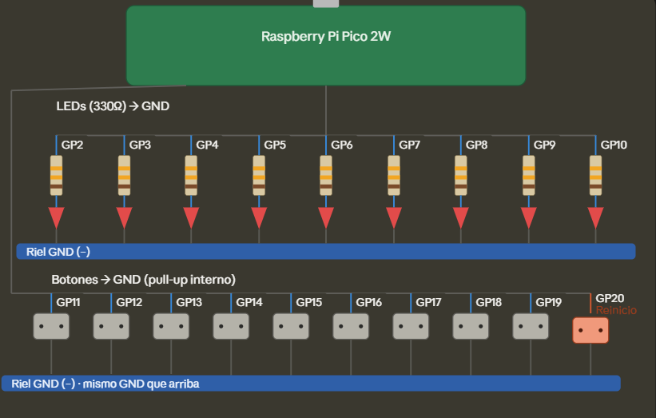

Blackout 3x3 — Practical Exam (RP2350)
Objective
Build a complete Lights-Out–style puzzle on a 3×3 grid of LEDs and a matching 3×3 grid of buttons. Pressing a button toggles the LED at that position plus its orthogonal neighbours (up, down, left, right) in a plus-shaped pattern, clipped at the edges. The player wins when all nine LEDs are off. A tenth, separate button restarts the game with a new random board at any moment, served by a hardware interrupt.
This was the practical exam for the course, graded on eight non-negotiable implementation rules on top of the gameplay:
- board state held in a single bit-packed integer, no per-cell array
- every operation on that state (move, win check, display) done with bitwise operators, no per-cell conditionals
- no timer peripherals — the program only reacts to input events
- restart served by a hardware interrupt, never polled
- a self-written random number generator (shifts and XOR only, no library
rand()) - every variable shared between the interrupt handler and
main()declared volatile - restart must work from any state, including mid-blink during a victory
Materials and Components
- 1 × Raspberry Pi Pico 2
- 9 × LED
- 9 × 330 Ω resistor (current limiter for each LED)
- 10 × Push-button (9 for the grid, 1 for restart)
- 1 × Protoboard
- Male-to-male jumper wires
- Micro-USB cable (programming and power)
Circuit Diagram
GPIO2 → LED 0 → 330Ω resistor → GND GPIO11 → Button 0 → GND (internal pull-up)
GPIO3 → LED 1 → 330Ω resistor → GND GPIO12 → Button 1 → GND
GPIO4 → LED 2 → 330Ω resistor → GND GPIO13 → Button 2 → GND
GPIO5 → LED 3 → 330Ω resistor → GND GPIO14 → Button 3 → GND
GPIO6 → LED 4 → 330Ω resistor → GND GPIO15 → Button 4 → GND
GPIO7 → LED 5 → 330Ω resistor → GND GPIO16 → Button 5 → GND
GPIO8 → LED 6 → 330Ω resistor → GND GPIO17 → Button 6 → GND
GPIO9 → LED 7 → 330Ω resistor → GND GPIO18 → Button 7 → GND
GPIO10 → LED 8 → 330Ω resistor → GND GPIO19 → Button 8 → GND
GPIO20 → Restart → GND
Logical grid layout (position i, not physical pin number):
0 1 2
3 4 5
6 7 8

As in the roulette lab, every button uses the Pico's internal pull-up (gpio_pull_up()), so each pin reads 1 when idle and drops to 0 on press. Unlike the roulette, the interrupt here is set on GPIO_IRQ_EDGE_FALL (the moment the button goes down), not the rising edge — since the win/lose logic needs to react the instant the press happens, not on release.
Source Code
#include "pico/stdlib.h"
#include "hardware/structs/sio.h"
#include "hardware/gpio.h"
#include <stdio.h>
#define LED_BASE 2
#define N_LEDS 9
#define BTN_BASE 11
#define N_BTN 9
#define RESTART_PIN 20
// Tiempo minimo entre dos pulsaciones del mismo boton para
// considerarlas distintas (filtra el rebote mecanico). Solo lee
// el contador libre de tiempo, no configura ningun timer.
#define DEBOUNCE_US 30000
const uint32_t MASK_LED = 0x1FF << LED_BASE;
const uint32_t MASK_BTN = 0x1FF << BTN_BASE;
// Estado del tablero: un solo entero, bit i = LED i encendido
static volatile uint16_t board = 0;
static volatile bool gane = false;
static uint32_t rng_state = 1;
static uint64_t ultimo_evt[N_BTN] = {0};
static uint64_t ultimo_evt_restart = 0;
// RNG propio (xorshift): solo shifts y XOR, nada de rand()
static inline uint32_t xorshift32(uint32_t *state)
{
uint32_t x = *state;
x ^= x << 13;
x ^= x >> 17;
x ^= x << 5;
*state = x;
return x;
}
// Mascaras "plus" precalculadas: aplicar un movimiento = una XOR
static const uint16_t PLUS_MASK[N_LEDS] = {
0x00B, 0x017, 0x026,
0x059, 0x0BA, 0x134,
0x0C8, 0x1D0, 0x1A0
};
static void dibujar_tablero(void)
{
sio_hw->gpio_clr = MASK_LED;
sio_hw->gpio_set = ((uint32_t)board) << LED_BASE;
}
// Genera un tablero siempre resoluble: XOR es su propio inverso
static uint16_t generar_tablero(void)
{
uint16_t nuevo = 0;
int n = 5 + (xorshift32(&rng_state) % 6);
for (int i = 0; i < n; i++)
{
int idx = xorshift32(&rng_state) % N_LEDS;
nuevo ^= PLUS_MASK[idx];
}
if (nuevo == 0) nuevo = PLUS_MASK[4];
return nuevo;
}
static void gpio_callback(uint gpio, uint32_t events)
{
uint64_t ahora = time_us_64();
rng_state ^= (uint32_t)ahora;
if (gpio == RESTART_PIN)
{
// El restart funciona en cualquier momento, incluso en victoria
if ((events & GPIO_IRQ_EDGE_FALL) &&
(ahora - ultimo_evt_restart > DEBOUNCE_US))
{
ultimo_evt_restart = ahora;
board = generar_tablero();
gane = false;
dibujar_tablero();
printf("RESTART -> tablero 0x%03X\n", board);
}
gpio_acknowledge_irq(gpio, events);
return;
}
int idx = gpio - BTN_BASE;
if (idx < 0 || idx >= N_BTN)
{
gpio_acknowledge_irq(gpio, events);
return;
}
// Mientras gane == true, los botones de la grid ya no alteran el tablero
if ((events & GPIO_IRQ_EDGE_FALL) && !gane &&
(ahora - ultimo_evt[idx] > DEBOUNCE_US))
{
ultimo_evt[idx] = ahora;
board ^= PLUS_MASK[idx];
printf("Boton %d -> 0x%03X\n", idx, board);
if (board == 0)
{
gane = true;
printf("BLACKOUT! Ganaste\n");
}
dibujar_tablero();
}
gpio_acknowledge_irq(gpio, events);
}
int main(void)
{
stdio_init_all();
rng_state = (uint32_t)time_us_32() | 1u;
for (int i = 0; i < N_LEDS; i++)
gpio_init(LED_BASE + i);
sio_hw->gpio_oe_set = MASK_LED;
for (int i = 0; i < N_BTN; i++)
{
gpio_init(BTN_BASE + i);
gpio_pull_up(BTN_BASE + i);
}
gpio_init(RESTART_PIN);
gpio_pull_up(RESTART_PIN);
sio_hw->gpio_oe_clr = MASK_BTN | (1u << RESTART_PIN);
board = generar_tablero();
dibujar_tablero();
gpio_set_irq_enabled_with_callback(BTN_BASE, GPIO_IRQ_EDGE_FALL, true, &gpio_callback);
for (int i = 1; i < N_BTN; i++)
gpio_set_irq_enabled(BTN_BASE + i, GPIO_IRQ_EDGE_FALL, true);
gpio_set_irq_enabled(RESTART_PIN, GPIO_IRQ_EDGE_FALL, true);
while (true)
{
if (gane)
{
sio_hw->gpio_set = MASK_LED;
sleep_ms(150);
if (!gane) continue;
sio_hw->gpio_clr = MASK_LED;
sleep_ms(150);
}
else
{
tight_loop_contents();
}
}
}
How it works
The board lives entirely inside one uint16_t: bit i is LED i, numbered left-to-right, top-to-bottom (0 1 2 / 3 4 5 / 6 7 8). There's no array with one slot per cell — reading, writing, and clearing the board is done exclusively through &, |, ^, and <<.
Applying a move is a single XOR against a precomputed mask. PLUS_MASK[i] has a 1 in exactly the bits that toggle when button i is pressed — the pressed cell itself plus whichever of its up/down/left/right neighbours actually exist inside the 3×3 grid (corners toggle 3 LEDs, edges toggle 4, the centre toggles 5). XOR is the right operator here because it flips a bit regardless of its current value, and because it's its own inverse: applying the same mask twice returns the board to what it was before. That's also why the starting board is always solvable — generar_tablero() builds it by XOR-ing a handful of random masks into an empty board, so pressing those same buttons again (in any order) always clears it.
Randomness comes from a self-written xorshift32 generator — three lines, all shifts and XOR, no call to the standard library's rand(). It's seeded once from the free-running time counter at boot, and re-mixed with the exact microsecond timestamp of every button press, so no two games start the same way even across power cycles.
The interrupt handler follows the same router pattern as the roulette lab, but here a single callback handles all ten pins directly instead of splitting into two named functions, since every grid button does exactly the same thing (board ^= PLUS_MASK[idx]) and only the restart pin needs different logic. Debounce is done per-pin with a small array of "last accepted timestamp" values, compared against time_us_64() — a plain read of the free-running counter, not a timer peripheral, so it doesn't count against the "no timers" rule. board and gane are the only two variables touched by both the interrupt and main(), so they're the only two marked volatile; the debounce timestamps are only ever touched inside the interrupt itself and don't need it.
Restart is intentionally written without checking gane at all — it regenerates the board and clears the win flag unconditionally, which is what lets it interrupt the victory blink mid-flicker instead of only working once the blinking stops. The if (!gane) continue; inside main()'s blink loop is the other half of that: it lets a restart that arrives mid-sleep_ms cut the animation short instead of drawing one more frame of a board that no longer exists.
Results
Pressing any of the nine grid buttons toggles the expected plus-shaped set of LEDs, correctly clipped at edges and corners. The board always starts on a non-empty, always-solvable configuration, and two consecutive resets produce visibly different boards. The instant the ninth LED goes dark the board enters a synchronized blink that grid presses no longer affect; pressing restart returns to a fresh board immediately, whether idle, mid-game, or mid-blink.
Conclusions
The biggest difference from the earlier GPIO labs is that the board state stopped being "one variable per thing I care about" and became one number I reason about entirely through bit positions — every rule change (a move, a win check, a redraw) had to be re-expressed as a bitwise expression instead of a conditional, which took more up-front thinking but made each operation a single line. Precomputing the nine PLUS_MASK values by hand, rather than deriving neighbours at runtime, also meant the edge-clipping behaviour required for the corners and borders came for free — there was no boundary check left to get wrong at runtime, because the boundary was already baked into which bits each mask sets. Writing xorshift32 instead of using rand() was a smaller change in the code but a bigger one in how I think about randomness: I had to be able to point at exactly where the unpredictability comes from (the timestamp reseeding on every press) instead of trusting a library function to "just work."